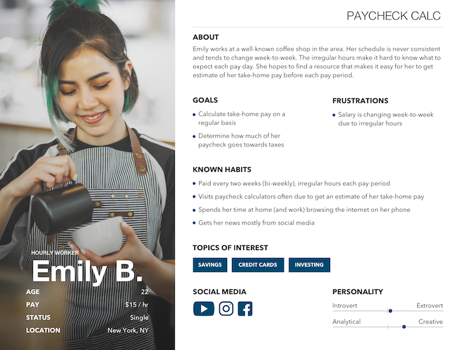
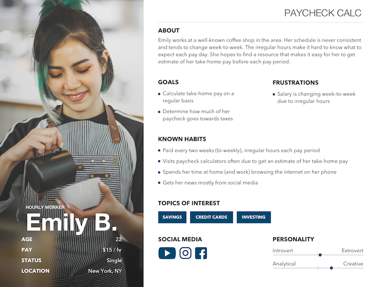

User Personas
 

GOAL
Continue to cultivate a more empathetic organization through the development of user personas.
RESEARCH APPROACH
Valid and reliable personas are based on data, not assumptions. So to ensure the accuracy of the Paycheck Calculator persona(s), I used data from a variety of sources making sure to check trends and patterns with stakeholders and external research. Demographic data was pulled from a combination of Google Analytics, whereas habits and behaviors were pulled from user inputs from the calculator, itself. A series of surveys were also used to not only verify uncovered trends, but to dive deeper into any specific insight related to the users’ personality and motivations. Once collected, insights were grouped in the following categories:
- Demographics - User type, name, age, salary, etc.
- About - A brief summary or backstory of the user
- Goals - Key goals of the user
- Frustrations - Issues that they user is dealing with as they achieve their goal
- Known Habits - A list of behaviors associated with browsing behavior, social media usage, favorite new sources, etc.
- Interests - A list of topics that are of interest to the user
- Social Media - A list of social media that the user uses on a daily basis
- Personality - A quick breakdown of key personality traits
FINDINGS
Paycheck Calculator User
The primary user of our Paycheck Calculator is a 25 - 35 year old individual, who has recently started (or is about to start) a new job. This individual is a tech-savvy, self-determined consumer hoping to get a better grasp of their future paycheck.
Key Findings
- The primary user has a simple tax situation and typically files their taxes by themselves, but is considering getting financial help as their tax situation becomes more complex.
- The primary user gets paid bi-weekly; working roughly 80 hours a pay period.
- The primary user is also interested in learning more about saving, credit cards, and investing as they start planning for longer-term financial goals.
RESULTS & NEXT STEPS
I used this project as an opportunity to grow my design skills by designing and creating the persona template myself. My goal was to create something that focused on the person, while being clean and modern.
The Paycheck Calculator personas were presented to the company in our weekly company-wide meeting and it was a hit! A number of people were interested in learning more about our users and even requested personas for specific pages. We will use them in future projects and continue to work towards creating personas for all major pages on SmartAsset.